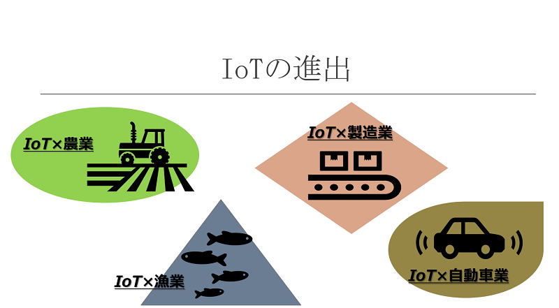
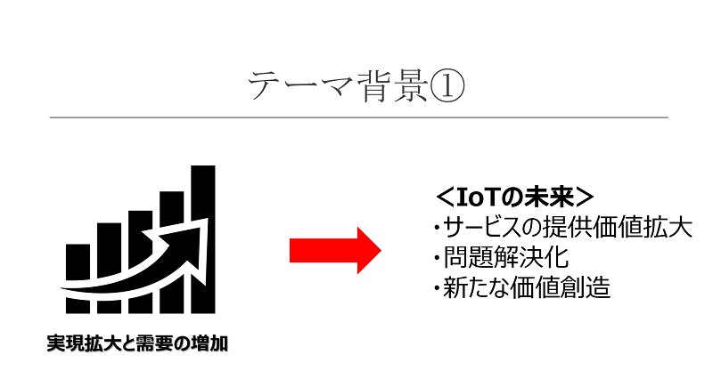
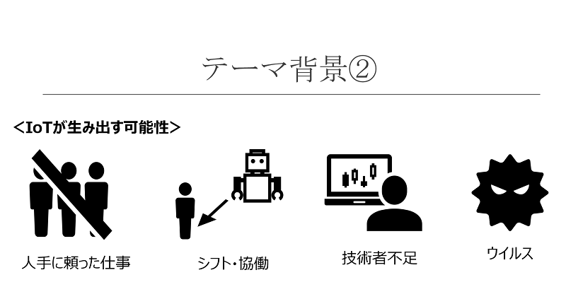
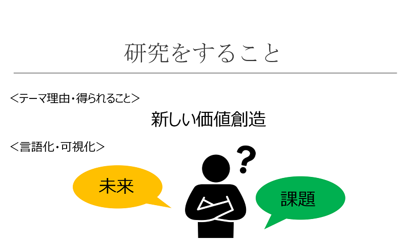
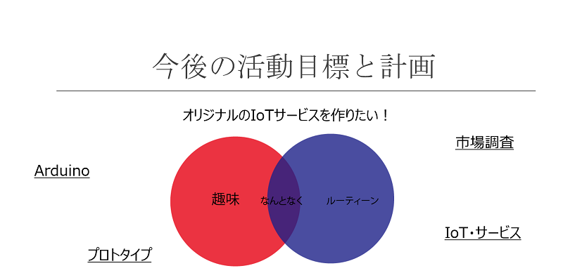

前期の研究まとめと今後
前期は基本的に"IoTを作る"という中の仕組みの部分を作ることに専念した。「IoTってなんだろう」という0から始まりインターネットに繋がる仕組みやセンサーを読み取って表示させるところまで学習できた。その総まとめとして自分の持てる技術を駆使して「IoT×インターフォン」を作った。
動画はこちら
IoT×インターフォン
超音波距離センサーモジュールとM5Stackを使ってインターフォンをIoT化させてみた。動画では伝わりにくいがこの機能を説明しておくと...。※本物のインターフォンを想定して作りました
距離センサーモジュールでヒトやモノを30㎝以内に感知したら、M5Stackの画面を光らせる→来客者（宅配サービスの方々等）がボタンを選択する→①Call(呼び出し)：Please waitという画面が表示され来客者が来たという通知がLINEに届く②Delivery（配達）:In the boxという画面が表示され配達サービスの方が住人と会話することなく配達できる③Other（その他の用事）という流れになっている。
インターフォンをIoT化することで、来客者と住人が直接関わることなくやりとりができる。前期では間に合わなかったが、住人がLINEで通知を受け取ったらスマホで返信し、それをLCDに表示させるという仕組みを付け加えたかった。こうすることで、住人と来客者がよりスムーズに間接的コミュニケーションを取ることができる。また、住人が外出しているときに来客者が来ても、LINEで返信できたら「あと3分で家に戻るので少々お待ちください」といった再配達にかかる時間を省くこともできる。ちょっと難しそうだけどいつか実現できたらなと思ってます。M5stackにメッセージ送信
※あと、調べてみたら市場には既にIoT化されたインターフォンがあるようです！
テーマ背景①
今、IoTは色んな業界に進出している。農業の分野では、水田の管理（水位・温度）の調節をセンサーで行うことで管理の負担を軽減する。参照サイトはこちら
このサイトによると、IoTを導入したことにより、水の管理の作業負担が50%軽減することが可能になり、”視覚的に確認””収量の向上””品質の安定化”に繋がったという。
漁業の分野では、水温の管理をIoTで行うことにより手書きで伝えるより正確で早くデータ収集が行えるようになり、安定した作業に繋がった。
モノがインターネットと接続されることによって、従来データ化できていなかった”見えないデータ”をサーバ上で処理、分でき、連携できるメリットは極めて大きい。今後農業や漁業だけでなく、色んな分野（行政、教育、福祉など）で需要が高まって来るだろう。
テーマ背景②
テーマ背景①で述べたように、IoTによって実現できる幅が広がるとともに、需要がどんどん高まっていく。そのため、このことへの世間の関心の高まりや需要の増加で私たちは色んな未来が描けるようになる。これまでに無かった、実現できなかった、より高い価値やサービスを生み出すことができる。

このように私たちはIoTによって実現されていく未来を良い風に描くこともできるが、研究する上では、いいことばかりでは無いことを確認しておく必要がある。普及するにつれて今後問題化されていきそうなことをまとめてみた。研究では、このことにおいても問いを立て、深掘りしていきたい。

①人手に頼った仕事が減るのではないか
AIが進出されたときもこの問題が騒がれていた。実際にまだまだ機械によって私たちの仕事は奪われていない。なぜなのか。AIは”人工知能”と呼ばれるだけあってその開発や普及に莫大な費用がかかる。一方で、IoTはより費用がかからず、開発のための費用はさほどかからないように思える（自分の見解）。そのこともあって、家庭や企業に普及、浸透していく速度は極めて早い。10年後、20年後、IoTでデータを読み取ってそのデータをAIが分析、管理する日常も来るのではないかと思う。
②仕事の協働化とシフト化
内容は①とそれほど変わらない変わらないかもしれない。ここでは、普及した段階の視点で見ていく。10年後、20年後にAI、IoT、ヒトが協働する世界がやってくるとする。その世界ではヒトはどのように仕事がシフトされていくのだろうと考える。私が考えるのは、今まで人間の力に頼っていた、担っていた仕事は減ると思う。その世界での人間の仕事は①”先生”や”弁護士”などといったヒトとの関わりを密にしている仕事？へシフト化されていくのではないか②IotやAIの開発職、分析職の需要が高まるのではないか③1つの仕事でもIoTやAIを活用した（協働？）した新しい職が誕生するのではないかという未来がたくさん描ける。
③技術者不足
IoTを作る上で技術者の存在は欠かせない。今、作る技術者より”活かす技術者”が不足していると言われている。どういうことかというと、IoTはデバイスから取得したデータを分析・活用できるという特徴を持っている。それを、どのように仕事・業界に反映させるかという技術者が足りていないのである（タブン）。IoTは”どんなモノに繋ぐか””どうやって利用するか”によって全く新しいサービスができる。いい意味でIoTの活かし方には多様性がある。そのため、新しいサービスが生まれるとともにそれをその事業に反映していく技術者も必要になってくるのではと考える。
④ウイルス感染
IoTは言葉通り、インターネットに繋がっている。パソコン同様、データ自体にウイルスが感染する可能性もある。プライバシーや重要なデータを扱うことになれば、情報漏洩の問題も出てくる可能性もあるため、これから徹底したセキュリティシステムが必要になってくるのではないかと考える。
テーマ背景③
このテーマを研究することで、自分でも新しい未来の価値創造ができる。これが研究する上での最も大きいメリットである。その上で、”どんな問題が出てくるのか””どうやって解決していくのか”という仮説を立て、それを可視化、言語化していくことがIoT発展のためにも重要である。上でまとめたように、IoTはまだまだ研究できることはたくさんある。

今後の目標と夏休み
最終的な目標としては、IoTを用いたオリジナルのサービスを作りたい。技術的には限度があるが、上で述べたように、”どんなモノに繋ぐか””どうやって利用するか”によって全く新しい価値を生み出すことができる。だからまだまだ自分でも作れるモノ、発展させる余地はあると考えている。
夏休みは主にどんなサービス（ルーティーンと趣味の間の何か）を作るかを具体化させ、自分で問いを立てたモノを考察していったり（市場調査）プロトタイプまでいけたらなと考えている。
